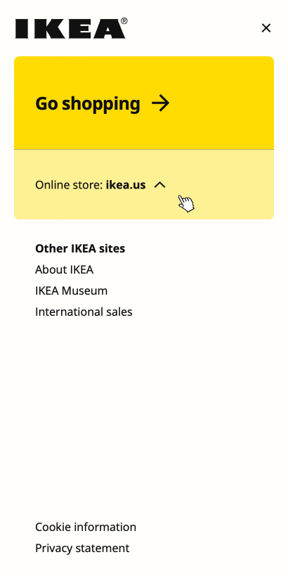

FINAL - HOW IT WORKS

Mouse hovers on the Hamburger menu
A side Hamburger menu slides from the right
Mouse hovers on 'Online store: ikea.us' button
After clicking on the button, the tab expands to reveal Find online store scrolling menu.
Mouse hover on 'Go Shopping'

Mouse hovers on link below 'Other Ikea sites'
Mouse hovers off link